Last modified
한눈에 보기
- 팀은 비전문가가 바로 쓸 수 있는 구조장치를 목표로, 물에 던지면 열원을 찾아 익수자에게 다가가도록 만든 저비용 구명보트와 발사장치 시제품을 제작비 약 51만 원으로 완성했습니다. 첫 학기 아이디어 단계에서 교내 산학연 캡스톤디자인 아이디어 최우수상(24.11)을, 완성 뒤 졸업작품 경진대회 장려상(25.09)을 받았습니다.
- 3인 팀에서 저는 차동 제어(좌우 DC 모터의 출력을 달리해 방향을 트는 제어), 아두이노(센서와 모터를 제어하는 보드) 회로 구성, 설계보고서 문서화를 맡았습니다. 두 번째 학기에는 PM(프로젝트 진행 관리)도 맡았습니다.
- 졸업 프로젝트로, 창의적종합설계와 심화종합설계 두 학기에 걸쳐 진행했습니다.
무엇을 만들었나
① 열원 쪽으로 스스로 방향을 튼다
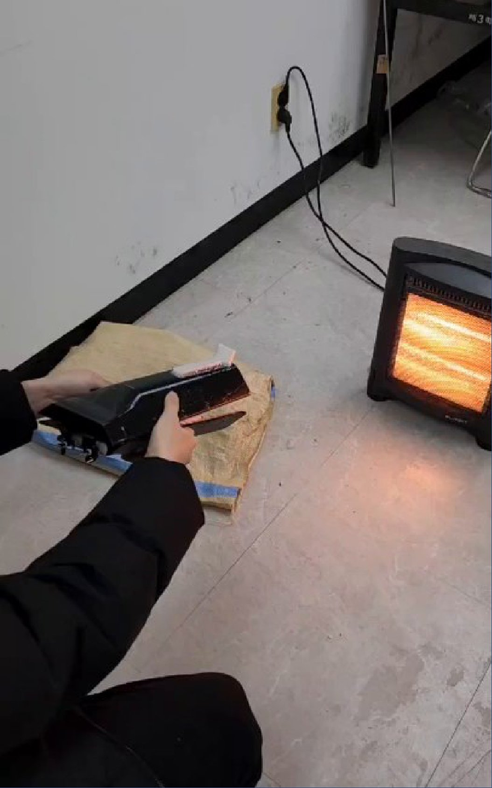
팀은 열화상 센서(8×8 격자로 온도를 재는 센서)가 읽은 값에서 가장 뜨거운 쪽이 왼쪽인지 오른쪽인지 찾도록 처리했습니다.
저는 이 방향에 맞춰 좌우 모터의 출력을 다르게 줘, 보트가 열원 쪽으로 머리를 돌리며 나아가도록 했습니다.
구동 방식을 정한 경위와 제가 맡은 차동 제어의 구체적인 내용은 아래 진행 과정에 적었습니다.
② 조종기로 직접 몰 수 있다
저는 무선 조종기(RC)의 신호로 좌우 모터를 움직여, 사람이 보트를 직접 몰 수 있는 수동 조종 부분을 맡았습니다.
조종기 신호가 하나라도 들어오면 사람이 모는 수동 조종으로 움직이고, 신호가 없으면 스스로 열원을 찾는 자율 추적으로 넘어갑니다.
③ 발사장치로 물에 던져 넣는다
팀은 사람이 들고 방아쇠로 쏘는 발사장치를 만들어, 보트를 익수자 근처 물 위로 날려 보내도록 했습니다.
두 번째 학기에는 자동 팽창 밸브를 넣어, 보트가 물에 떨어지면 구명튜브가 펼쳐지도록 바꿨습니다.
진행 과정
상용 수난 구조장비는 비싸고 조작 숙련이 필요해 비전문가가 바로 쓰기 어렵다는 문제에서 출발했습니다.
구동 방식 결정과 좌우 모터 차동 제어
팀은 착수 충격과 아두이노 제어 난이도를 고려해 일반 DC 모터 2개를 좌우에 두는 차동 방식을 택했고, 저는 열원 방향에 따라 좌우 모터 출력을 달리하는 제어와 무선 조종기(RC) 수동 조종을 맡았습니다.
보트는 발사장치로 물에 던져 넣으므로 착수 충격에 견뎌야 했고, 아두이노(센서와 모터를 제어하는 보드)로 제어하기 쉬우며 해상 구조에 충분한 추진과 조향이 필요했습니다. 팀은 구동 방식을 토의해 정했습니다. 프로펠러 하나에 방향타(키)를 다는 방식은 착수 충격에 키가 부서질 위험이 있었습니다. 또한 고성능 모터(BLDC 모터)는 아두이노로 제어하기 어렵고 구조용 보트에 고성능까지는 필요 없었으며, 방수 모터는 추진 성능이 떨어졌습니다. 이에 팀은 일반 DC 모터 2개를 좌우에 두고 출력 차이로 방향을 트는 차동 방식을 택했습니다.
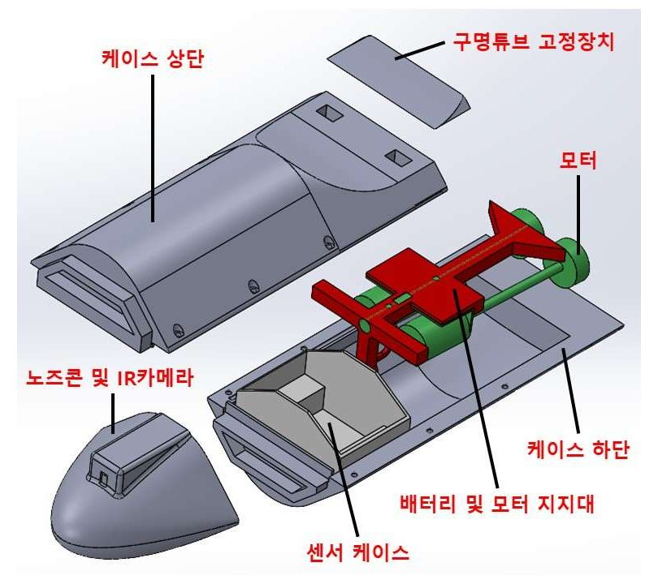
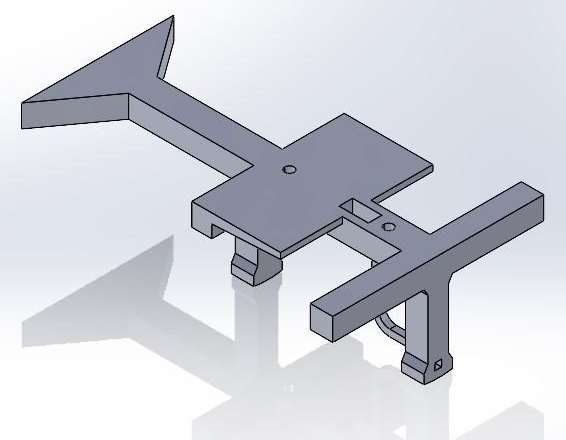
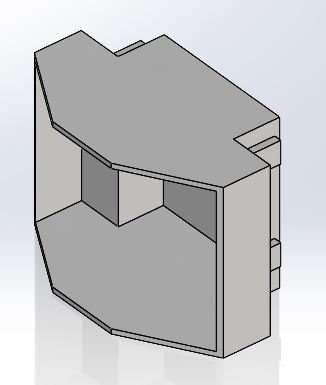
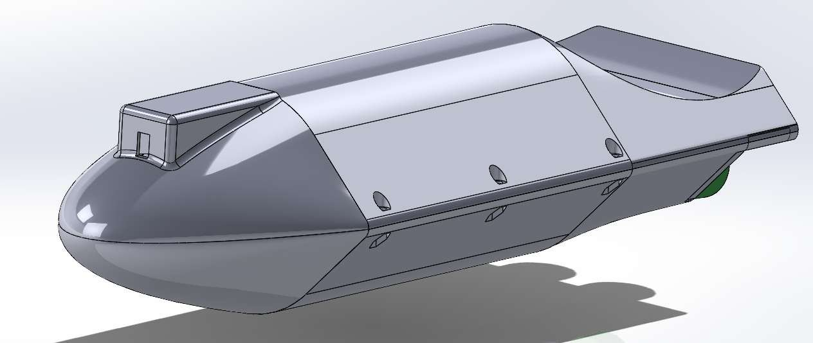
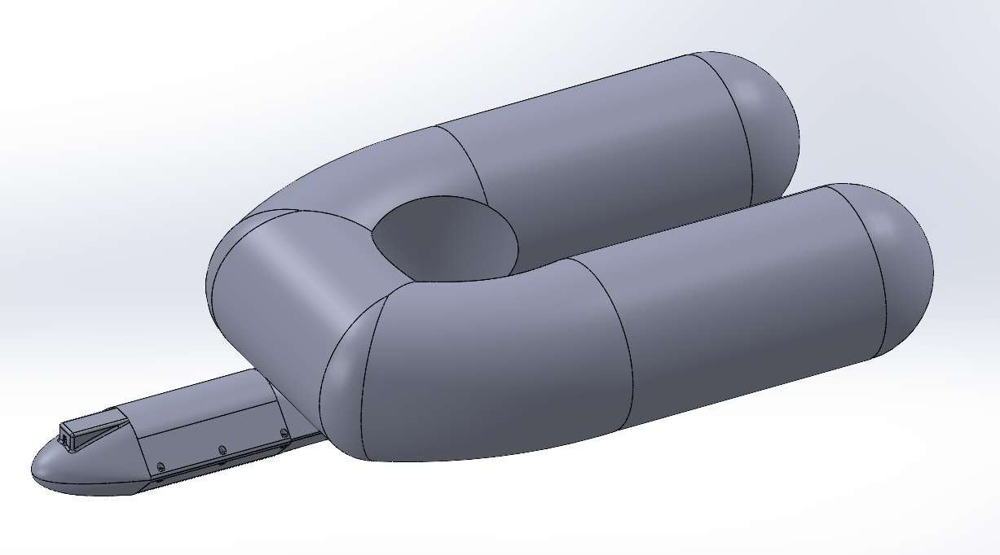
저는 열원 방향에 맞춰 좌우 모터의 출력을 다르게 주는 제어를 맡았습니다. 방향에 따라 좌우 출력 배분을 달리해 크게 꺾기, 완만히 꺾기, 직진을 구분했습니다. 아울러 무선 조종기(RC)의 신호로 보트를 직접 몰 수 있는 수동 조종도 함께 구현했습니다. 보트는 조종기 신호가 들어오면 수동 조종으로, 신호가 없으면 자율 추적으로 넘어가, 별도 스위치 없이 조종기 하나로 운용합니다.
팀은 지상에서 보트를 손에 들고 켜진 전기히터 쪽으로 향하게 하며 열원 추적 동작을 점검했습니다.
이 경험을 통해 장치가 실제로 쓰이는 환경의 충격이나 보드의 제어 성능처럼 실물 운용 조건을 기준으로 삼아야 부품이 견디고 다룰 수 있는 방식을 고를 수 있다는 점을 배웠습니다.
부품별 코드 점검과 회로의 단일 보드 통합
팀은 따로 짠 센서·조종·모터 코드를 아두이노 한 장에서 돌아가게 합쳐 바로 앞의 열원을 찾는 데까지 이었고, 저는 기존 조종·모터 코드 점검과 아두이노 한 장에 부품을 모두 잇는 회로 구성을 맡았습니다.
첫 학기에는 부품별로 따로 짠 열화상 센서·무선 조종(RC)·모터 코드를 아두이노 하나에서 돌리려고 합치다 막혀, 팀은 정기 회의 외에 회의를 하나 더 잡았습니다. 문제를 한꺼번에 해결하려 하지 않고 단계를 나누어 점검했습니다. 모터 제어를 맡은 저는 기존 무선 조종과 모터 제어 코드의 동작부터 다시 점검했습니다. 팀은 센서 신호를 시리얼 통신(보드의 값을 PC 화면으로 받아 보는 통신)으로 먼저 확인한 뒤 모터 코드와 합쳐, 바로 앞의 열원을 찾는 것까지 확인했습니다.
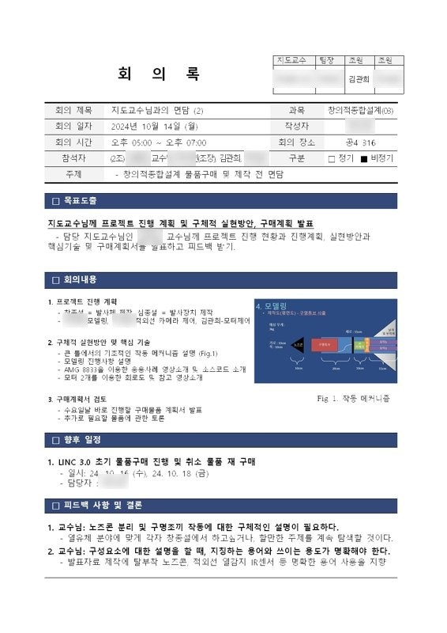
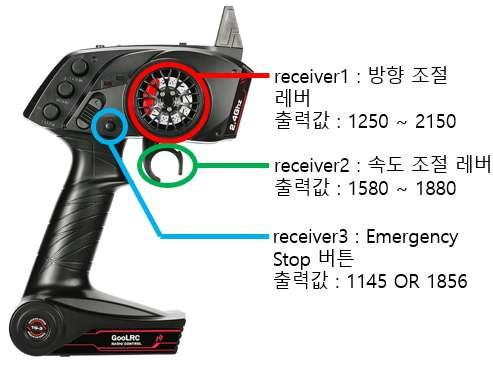
아두이노와 모터를 잇는 회로 구성 역시 제가 맡아 진행했습니다. 아두이노 보드 한 장에 열화상 센서, 조종 신호 수신기, 모터 드라이버(보드 신호를 받아 모터에 전기를 보내는 부품), 7.4V 배터리를 잇고, 보드와 모터 드라이버가 좁은 선체 안에 들어가도록 배선을 꾸렸습니다.
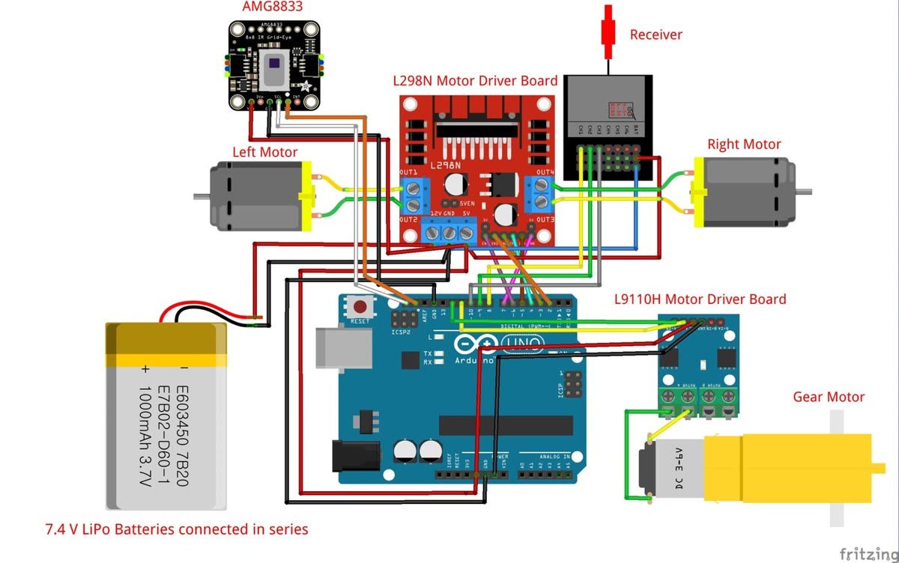

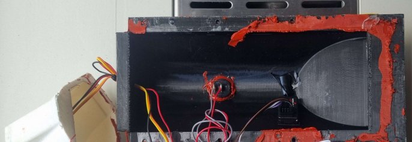
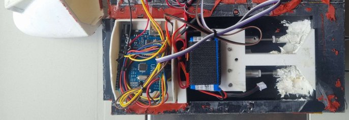
팀은 원거리 열원 탐지 시험과 열원만 골라내는 필터는 다음 일정으로 남겼습니다.
복합적인 문제가 발생했을 때 전체를 한 번에 합치기보다 모듈별 동작과 신호를 먼저 분리해 확인한 뒤 순서대로 합치는 작업 순서의 중요성을 익혔습니다.
시제품 한계 분석과 2차 개선
팀은 두 번째 학기에 전원 스위치·배터리 보온 구조와 자동 팽창 밸브를 넣어 시제품을 보완하고 야외 발사 시험에서 약 9m 비거리를 확인했으며, 저는 이 학기에 PM으로 일정과 물품, 발표 준비를 챙겼습니다.
첫 학기 시제품에는 몇 가지 한계가 있었습니다. 전원 스위치가 없어 상시 전원으로 배터리가 빨리 방전되었고, 저온 환경에서도 쉽게 방전되었습니다. 또한 구명튜브를 수동으로 부풀리던 기어모터는 견딜 수 있는 하중(허용하중)에 한계가 있었습니다.
팀은 기말 발표에서 이 한계들을 개선안으로 정리했습니다. 전원 스위치 추가와 스위치부 방수 처리, 고용량 배터리 교체, 배터리 단열 처리를 계획했습니다.
팀은 두 번째 학기에 On/Off 스위치와 배터리 보온 구조를 넣고, 기어모터로 튜브를 부풀리던 복잡한 메커니즘을 대체하려고 구명튜브 전개를 수면 착수 시 펼쳐지는 자동 팽창 밸브로 바꿨습니다.
저는 두 번째 학기에 PM(프로젝트 진행 관리)을 맡아, 주간 강의 과제 발표에 맞춘 발표 자료 준비, 설계 수정 건의와 참여, 물품 관리, 회의와 작업 일정 조율을 챙겼습니다.
팀은 발사체를 발사장치에 장착해 발사하고, 착수 후 익수자 쪽으로 자동 이동하며, 거리가 멀면 조종기로 수동 주행으로 전환하고 구조 종료나 돌발 상황 시 정지하는 순서로 작동 과정을 정리했습니다. 야외 발사 시험에서 실측 약 9m의 비거리를 확인했고, 수상 구동·비거리·자율주행 시험 영상을 남겼습니다. 팀은 첫 학기 아이디어·첫 제작 단계에서 교내 산학연 캡스톤디자인 아이디어 최우수상(24.11)을 받았습니다. 이후 개선을 거쳐 제작비 약 51만 원으로 시제품을 완성하고 교내 졸업작품 경진대회 장려상(25.09)을 받았습니다.
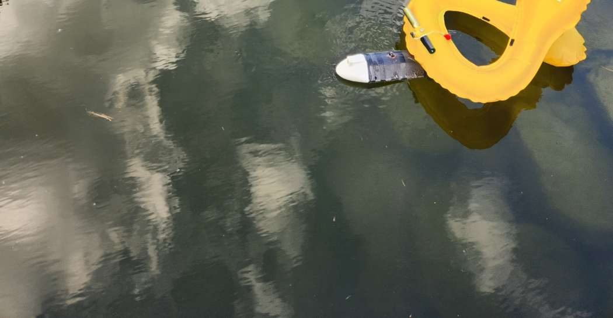
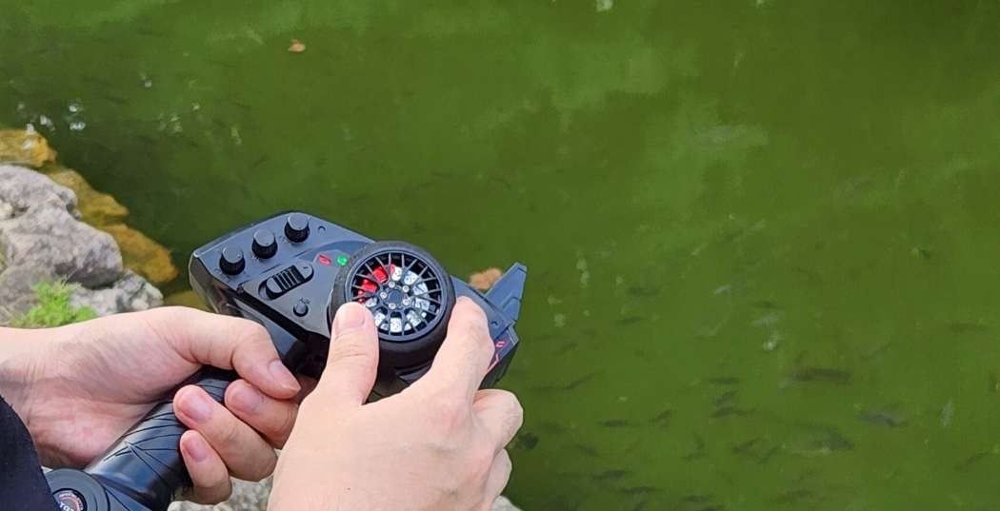
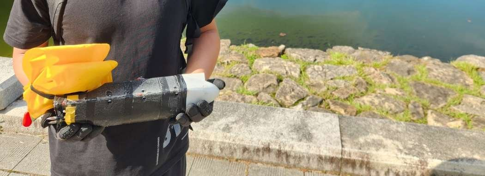
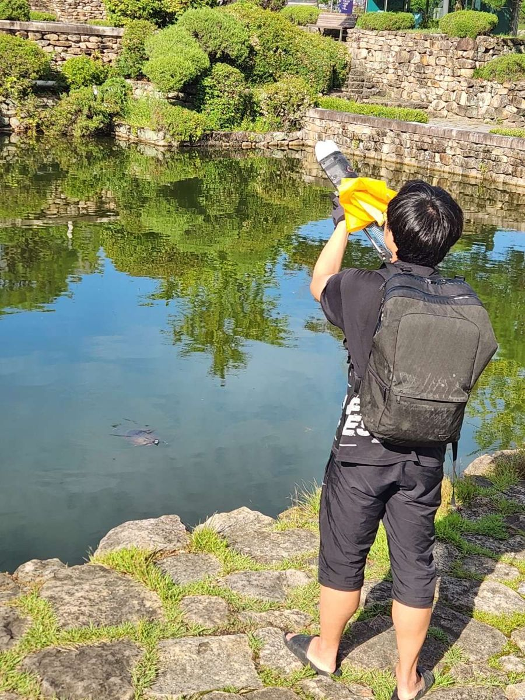
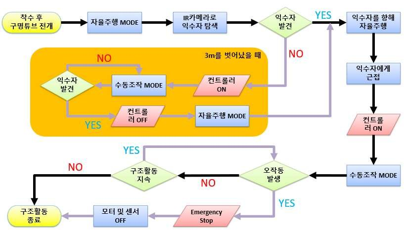
다만 원거리 탐지 결과나 개선 전후의 전압·작동 시간은 기록으로 남기지 못했습니다.
한 학기 결과의 한계를 발표에서 개선안으로 정리해 다음 학기에 반영하는 흐름을 경험하며, 개선을 말하려면 전후를 비교할 값부터 데이터로 측정해 두어야 한다는 점을 배웠습니다.
팀에서 일한 방식
역할은 회로 구성(제 담당)·센서 제어·모델링으로 나눴습니다.
- 팀원들이 이끈 일: 선체 항력(물의 저항) 해석, 발사장치, 방수 하우징, 구명튜브 팽창 기구
- 함께 한 일(공동작업): 코드 통합, 선체 형상 설계
그 안에서 저는 이렇게 일했습니다.
- 3D 모델에서 모터·센서를 고정하는 홀더의 배치와 부품끼리 부딪히는지(간섭)를 확인하며, 회로와 제어를 선체 형상에 맞췄습니다.
- 회의록 작성을 맡아 담당과 다음 일정, 시험 확인 결과와 다음 개선 과제를 기록했습니다.
- 설계보고서 문서화를 맡았습니다.
배운 점
아두이노로 센서를 읽고 PWM(펄스 폭으로 모터 속도를 조절하는 방식)으로 모터를 돌리는 제어와 회로 구성을 이 프로젝트에서 직접 다뤘습니다.
선체 내부 공간과 부품 간섭을 고려해 배선과 부품을 배치하고, 기구 조건에 맞춰 회로와 제어를 조율하는 하드웨어·소프트웨어 통합 방식을 익혔습니다. 또한 회의록에 담당과 다음 일정을 적고 설계보고서를 정리하며 팀 협업을 뒷받침하는 방식을 배웠습니다.
기술 상세
열 추적·모터 제어 흐름 펼쳐 보기
열화상 센서의 8×8 온도값을 열별 최댓값 8개로 줄여 가장 뜨거운 열의 위치로 좌우 방향을 정하고, 방향마다 좌우 모터 출력을 다르게 줘 방향을 틉니다. RC 신호가 들어오면 수동 조종으로, 없으면 자율 추적으로 넘어갑니다.
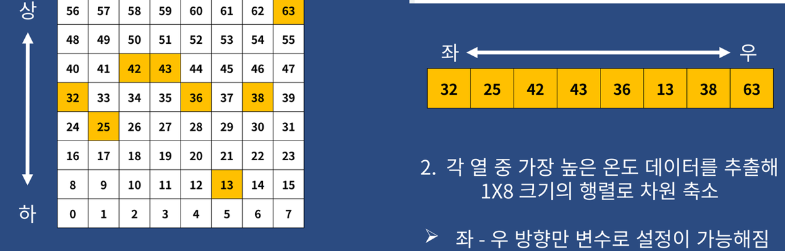
참고 문서
팀 발표 자료(세부 기술): 창의적종합설계 발표 자료(PDF, 47쪽) · 심화종합설계 발표 자료(PDF, 48쪽)
코드 근거
Grad_proj — 프로젝트 기록과 아두이노 코드(원본이 남아 있지 않아 졸업논문에 실린 코드로 재구성, README가 코드 구성을 설명합니다)